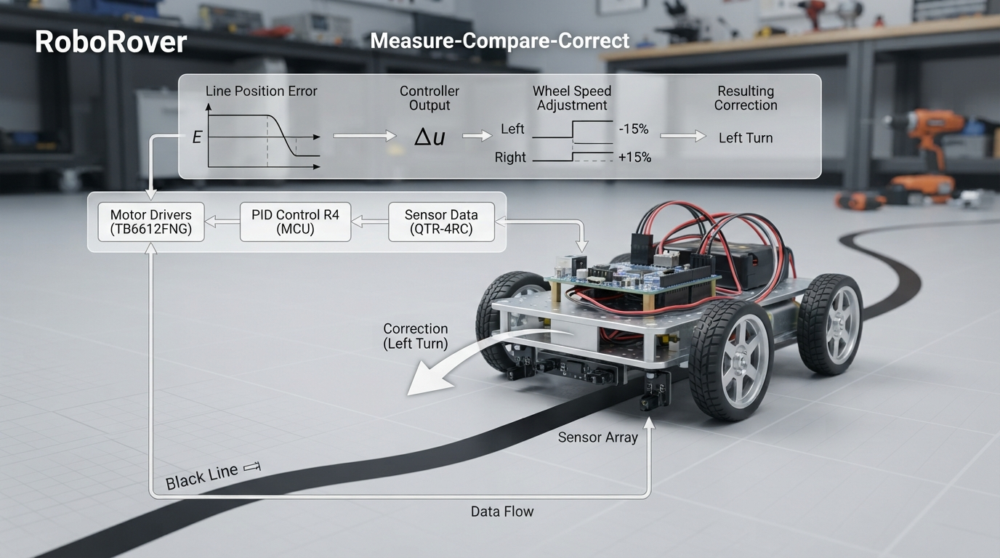

A robot does not correct itself by magic. It measures, compares, acts, and measures again.
This Professor OS lesson makes that loop concrete through RoboRover:
• Define signed error and connect its sign to correction direction.
• Distinguish open-loop action from measurement-driven feedback.
• Use a deadband to examine the tradeoff between stability and residual offset.
• Run a deterministic Python simulation with noise, assertions, and inspectable history.
• Experiment with missing correction, a wider deadband, and faulty measurements.
The lesson also keeps the simulation honest: a fixed-step threshold controller is not proportional control, and a model is not a physical robot. Students can see exactly how sensor readings influence decisions before moving to P control.
Try the lab by predicting the action sequence and final position before running the code. Then change one parameter at a time and explain what changed in the robot’s behavior.
Explore Professor OS: https://connect.vin/professor-os
#RoboticsEducation #FeedbackControl #Python #STEM
This Professor OS lesson makes that loop concrete through RoboRover:
• Define signed error and connect its sign to correction direction.
• Distinguish open-loop action from measurement-driven feedback.
• Use a deadband to examine the tradeoff between stability and residual offset.
• Run a deterministic Python simulation with noise, assertions, and inspectable history.
• Experiment with missing correction, a wider deadband, and faulty measurements.
The lesson also keeps the simulation honest: a fixed-step threshold controller is not proportional control, and a model is not a physical robot. Students can see exactly how sensor readings influence decisions before moving to P control.
Try the lab by predicting the action sequence and final position before running the code. Then change one parameter at a time and explain what changed in the robot’s behavior.
Explore Professor OS: https://connect.vin/professor-os
#RoboticsEducation #FeedbackControl #Python #STEM

Teach Robot Feedback with a Measurable, Testable RoboRover Simulation
A beginner-friendly robotics lesson connecting signed error, deadbands, sensor noise, and feedback control to an inspectable Python simulation and safe hardware practice.